Wyoming Cutt Slam
Unlike the Utah Slam, which I did over the course of a summer, I attempted the Wyoming Slam over the course of a few days. It didn’t work, and I had to make a second trip to Wyoming to complete the slam, but because I don’t live in Wyoming, I initially wanted to minimize driving back-and-forth. In retrospect, I have mixed feelings about this approach. I definitely felt rushed the whole trip, and it felt like I was doing more driving than fishing. On the other hand, I knocked out three of the four fish I needed in about five days, including the fish farthest from my house that I wanted to avoid having to drive back for. When I had a free weekend near the end of summer, I drove back to Wyoming to target one fish, and it was one of the closest to my house. I wouldn’t want to fish this way again, but for most of us who don’t live in western Wyoming, trying to complete the slam in a week or so is the most viable option.
Despite the long driving distances, I thought it would be easier than the Utah slam; Wyoming has more options for each fish, bigger water (less brush), and at the time, had more resources online to help plan a fishing trip. Wyoming has a program called “Instream Flow” that provides helpful information on lots of different rivers and creeks, and a related program called “XStream Angler” in which you receive a hat if you a take a picture of yourself near three qualifying rivers or creeks. This is an easy thing to complete when you do your slam as most waters fished in the slam are also considered “instream flow” rivers. When I did the slam a few years ago, I think they required pictures near seven rivers, but perhaps that was too demanding for most people.
Bonneville Cutthroat–Hobble Creek
Bonneville Cutts are found in rivers that flow into the Great Basin. Utah further separates species into Bear River and Bonneville, while Wyoming makes no such distinct. I don’t know what the scientific case is for calling the Bear River and Bonneville separate species, and I suspect Utah does it because they can’t have a fish slam with only three species. Regardless, Hobble Creek flows into the Bear River via the Smiths Fork from the Wyoming Range outside of Cokeville, Wyoming. It’s only about an hour and a half from my home in Cache Valley, Utah so this was the first place I started. I’ve now done quite a bit of hiking, camping, and fishing in the Wyoming Range and adjacent Salt River Range, both of which are incredibly underrated.
My driving plan was somewhat convoluted, and in retrospect, I did not do this correctly. Once I’d caught the Bonneville, I planned to go up a road that follows the Smiths Fork north, take that up and over to the Tri-Basin divide, fish for the Colorado River Cutthroat in LaBarge Creek, then go down Greys River Road to fish for Snake River cutthroat. This didn’t work because the road up Smiths Fork to connect with the Tri-Basin divide slowly deteriorated as we drove up it. Eventually, we came to a spot where the road turned into a giant mud puddle and though it looked like I might be able to get my truck through it, I decided discretion was the better part of valor and turned around. I once got stuck in mud on a dirt road in Kansas, and that experience scarred me so deeply I have become extremely risk averse with muddy roads. Unfortunately, this meant going all the way back out to Cokeville and driving around the southern end of the Wyoming Range. It also changed the creeks I would fish, which ended up having significant consequences.
Hobble Creek is reached by a long drive on relatively good forest roads up until the last mile or so when there is a creek crossing. High clearance vehicles without four-wheel drive should have no problem but I wouldn’t take a sedan across the creek. Unfortunately, there isn’t really a spot for dispersed camping at the crossing that I could see, so it’s important to get to the campground farther down the road. There is also a parking lot for Lake Alice, which is about a two mile hike from the campground, a nice sidetrip with an interesting geological history. This area is used quite a bit by locals visiting the lake on daytrips, but there was only one other site taken in the campground. I think the creek receives a moderate amount of pressure farther downstream as I’ve seen a few people fishing it the times I’ve been up there.
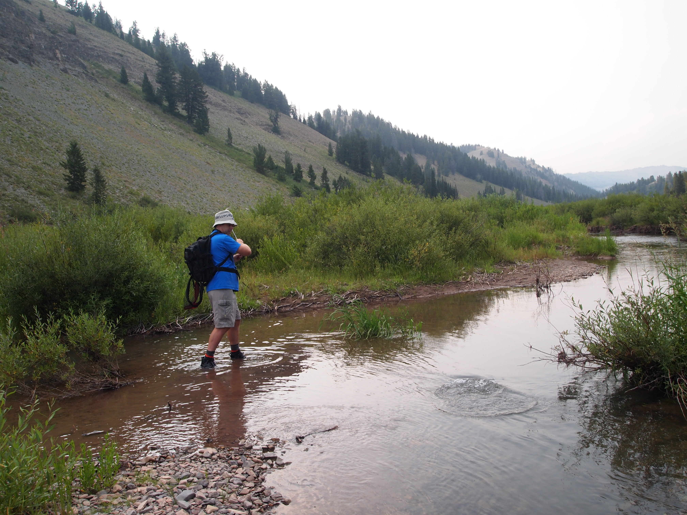 Into a big brown on Hobble Creek.
Alice Creek, which flows out of Lake Alice, comes into Hobble right at the campground, and the flow is greater after their confluence. When you first enter Hobble Creek canyon on the forest road, before the campground, Coantag Creek joins up with Hobble Creek and also significantly increases the flow into Hobble. I think most people fish from this point downstream because it’s a bigger creek so they assume it holds bigger fish, and it’s the closest road access for people who drive up for the day.
I’ve only fished upstream from Coantag Creek, on Hobble Creek up to Alice Creek, then above Alice Creek. Besides the increased pressure, the problem with fishing downstream of Coantag Creek is that it if you stay in the campground, you’d likely have to get back in your car and drive downstream approximately a mile or two to get back to this water. That didn’t make much sense to me so I just walked down the road to get downstream of the campground then fished back up to it. I’ve fished Hobble Creek a few times now, and I can promise there are very large fish, both cutts and browns, upstream of Coantag Creek near the campground.
When I was fishing for the slam, it was my first time fishing Hobble. On the Logan, my “home river,” there is a fish in every soft spot on the river, almost behind every rock. Because that was what I was used to, and I didn’t have a lot of experience fishing other rivers, I expected to have higher catch rates in Hobble Creek. In fact, when we arrived at the campground in the late afternoon, I walked upstream of the campground and found a nice hole with an undercut bank. Almost immediately, I hooked into a large fish that ended up being a brown. I wasn’t expecting brown trout in Hobble Creek as I thought it was all cutthroat, so though it was a 15 inch plus fish, it didn’t count for the slam. That first fish fooled me because I thought the fishing was going to be easy but I had a more difficult time catching a cutthroat the next morning.
I wasted a lot of time fishing spots that in retrospect weren’t likely to hold fish. Eventually, I caught exactly one cutthroat and a few additional browns, and had my first fish of the Wyoming slam. Hobble Creek has since become one of my favorite fishing and camping spots, and I’ve subsequently caught very large (nearly 20 inch) cutthroats in the creek, though there are perhaps not as many fish as I would expect given how good the water looks.
On that first trip, the large brown I caught made for a delicious dinner. I usually practice catch and release, and I would never keep a cutthroat in a native drainage, but I view browns in these drainages as an invasive species so I sometimes eat them.
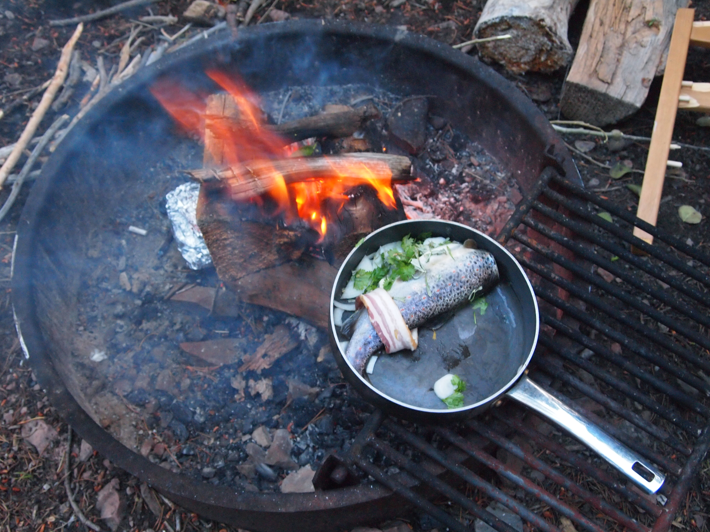 Catch and cook.
Colorado River Cutthroat–Attempt Number 1, Various Creeks
As I described above, an attempt to take the road which parallels the Smiths Fork over to Tri-Basin Divide didn’t work as the road was impassable. I was worried this was going to happen and it added hours of driving. Smiths Fork above Cokeville, near the turnoff to the road to Hobble Creek, is a large-ish river that is supposed to have very good fishing. However, access is a bit of a problem as most of the river is private, and there is nowhere to camp nearby. This could be an option for the Bonneville if one wanted to stay in a hotel near Cokeville, though I believe the Smiths Fork also has browns in it. I chose Hobble Creek because it offered convenient camping. I later fished the Smiths Fork up much higher, closer to the Tri-Basin divide, which has much better forest road access (the road I was attempting to connect to) and flows through public land. There is abundant and excellent dispersed camping in this area, but surprisingly, the fishing wasn’t very good for me over two nights of camping. I caught a few fish here and there but really struggled. I’ve only fished it that one time so I’m not sure if that was bad technique on my part or if the fishing really isn’t that great.
The vast majority of people attempting the slam center their efforts on Tri-Basin divide. One can catch the Bonneville in upper Smiths Fork, drive a very short way to catch the Colorado River in LaBarge Creek, then go down Greys River Road to catch the Snake River. All three of these fish exist within maybe a five mile radius. Because I couldn’t connect up to Tri-Basin, I drove around the southern end of the Wyoming Range to fish the creeks coming off the east side of the range, then connected over to the Greys on forest roads via McDougal Gap. Again, literally every Wyoming Cutt Slam report online says to fish LaBarge Creek, but I didn’t want to have to drive up LaBarge Creek road then down Greys River road as I thought that would add significant time, and there aren’t any campgrounds on LaBarge Creek or in the Tri-Basin area. Because the Wyoming Fish and Game lists a number of creeks on the east side of the Wyoming Range that hold cutts, I thought I would just fish these. The night after leaving Hobble, we camped at Sacajawea Campground which is located on Middle Piney Creek.
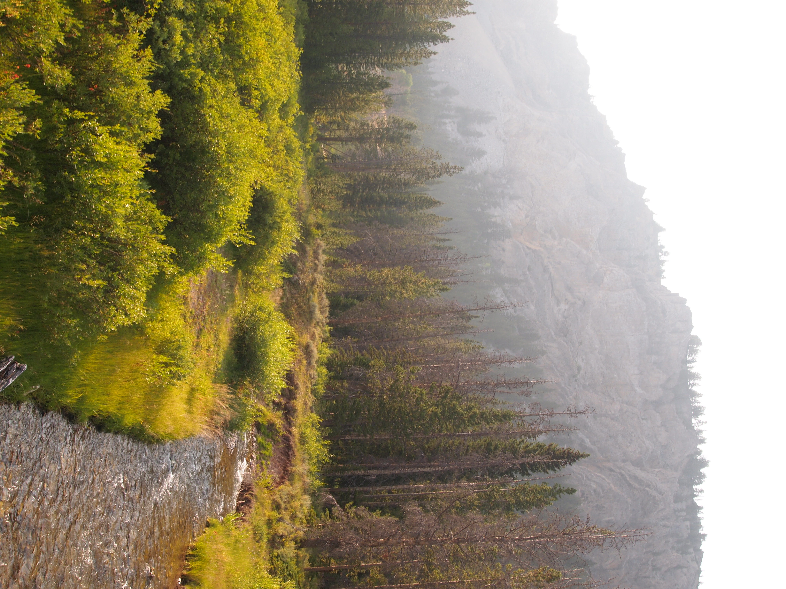 Middle Piney creek near Sacajawea Campground. Small, but should have given more effort. The smoke started moving in.
Sacajawea is another amazing, nearly deserted forest service campground in Wyoming that should be crowded. Unfortunately, Middle Piney Creek was tiny and my brief efforts to fish on evening arrival didn’t yield anything. Here is where feeling time pressured got to me. Instead of giving Middle Piney a real chance, the next day we decided to begin heading to Greys River Road and fish along the way as the drive over to the Greys would cross a number of creeks. Before I complain about the fishing, I will say the scenery on this drive is spectacular.
The first stop was North Piney Creek. The fishing was slow but I did manage to catch a brook trout, which was not helpful. The second stop was North Cottonwood Creek, which is on the forest road which goes over McDougal Gap. After about an hour of fishing unsuccessfully, I finally caught a small brook trout. This was very frustrating, and out of ideas, I gave up and we drove over McDougal Gap to the Greys River.
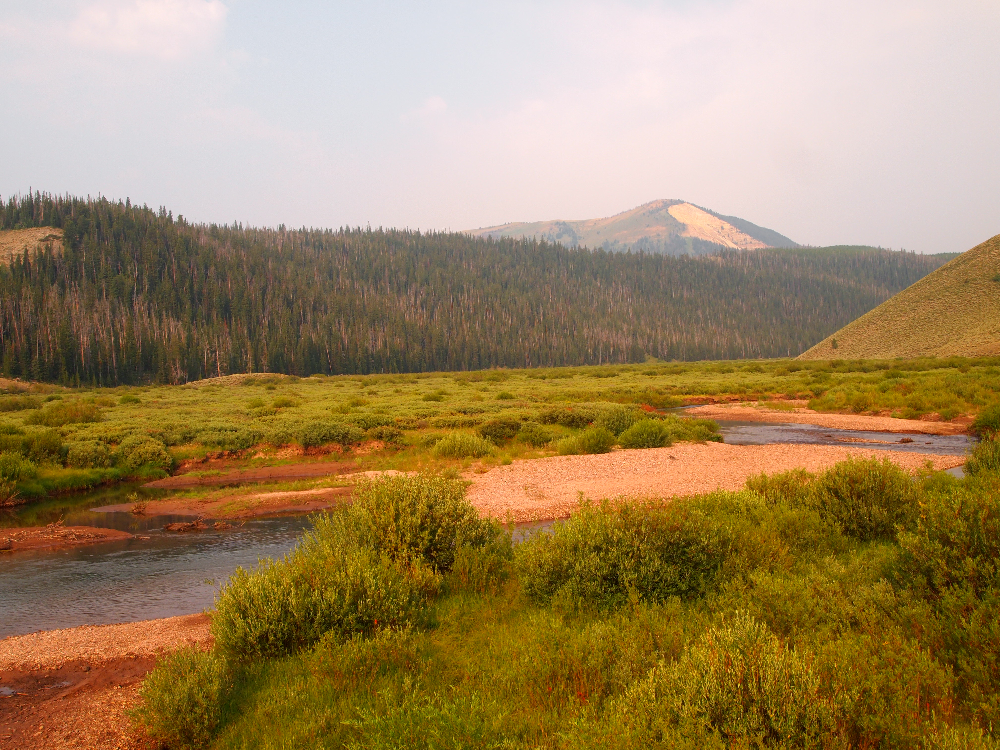 North Piney Creek. Looks good, caught nothing but a few brooks.
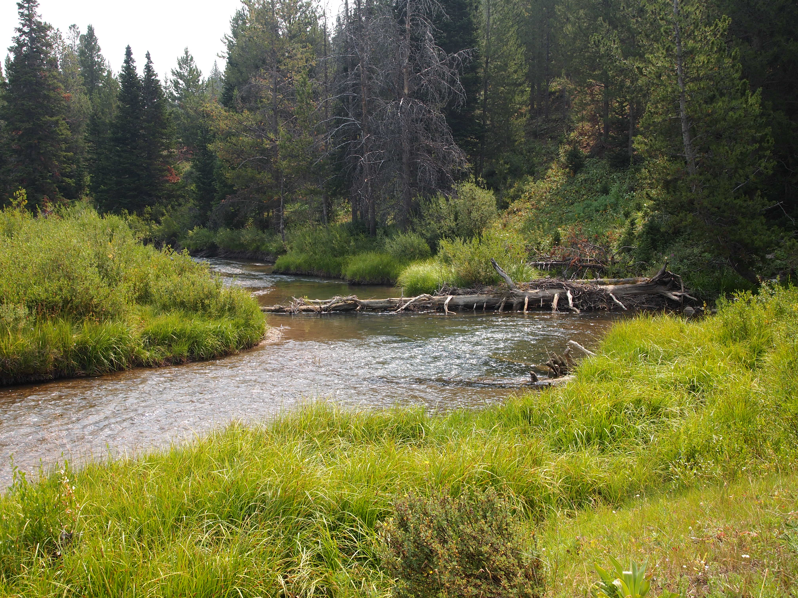 Same story on North Cottonwood.
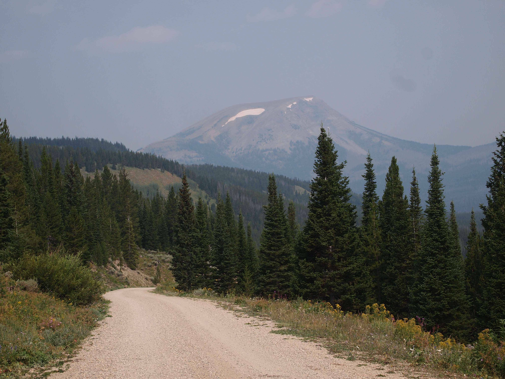 Driving between basins on east side of Wyoming Range.
Snake River Cutthroat–Greys River
The Greys River forms in the Tri-Basin divide and Greys River Road runs its entire length, from there to Alpine, WY where the Greys meets the Snake in Palisades Resevoir. The road is well maintained and well traveled, and while this area isn’t exactly deserted, its not so crowded as to be unpleasant. The scenery is spectacular and the fishing is supposed to be very good as well. We stayed in Forest Park Campground which is just upriver from where the forest road over McDougal Gap meets Greys River Road. Forest Park was also mostly empty, though a lot of people prefer to disperse camp along the Greys River.
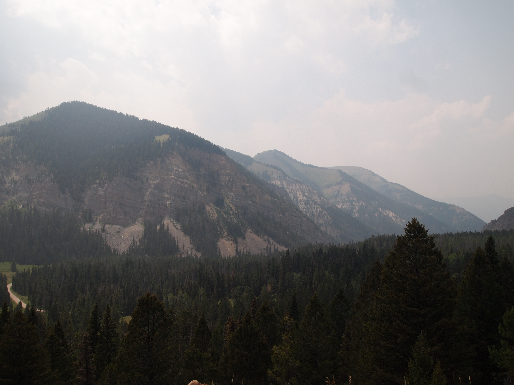 Over McDougal Gap into Greys River drainage, forest road at bottom left. It had been smoky all day.
I eventually caught my Snake River cutt in the Greys. It was not spectacular fishing in terms of catch rate or size, but the surroundings made up for much of that. It was very hot when I was there, and nothing really started happening until late in the afternoon. I’d already been fishing for a few hours so I caught maybe three or four medium size cutts and called it. We had a very long drive planned the next day, and I was frustrated after my lack of success fishing for the Colorado River cutt.
Oddly, I’ve never fished the Greys again, despite passing by it a number of times. There isn’t a good reason for that, other than I’ve never really gotten around to it. I would like to drive its entire length from Alpine to Tri-Basin divide. Years later, for my Western Native Trout Challenge, I fished the very top of LaBarge Creek and caught a Colorado River cutt, but didn’t make it down to the Greys. I’d like to determine whether my slow evenings on both the Smiths Fork and Greys River were aberrations or if the fishing is not as good as reports suggest. One other note on Greys River road: when leaving Greys River Road and entering Alpine, a stop at Melvin’s Brewery is mandatory.
Yellowstone Cutthroat–Greybull River
Was the drive from Alpine, though Jackson, Teton National Park, Yellowstone National Park, out to Cody, and to the Greybull River a frustrating slog through bumper-to-bumper traffic? Yes, and I won’t relive it by elaborating further. I’ve now driven through Yellowstone twice in the summer, and I’m sorry to say it’s just awful.
Outside of Cody, and closer to Meeteetse, WY, there are quite a few possibilities for the Yellowstone cutthroat. Both the Greybull and Wood River are supposed to have fantastic fishing, and I chose the Greybull because of the forest service campground on the river and because Jack Creek flows into the Greybull at the campground; if the mainstem didn’t work, I would have a backup.
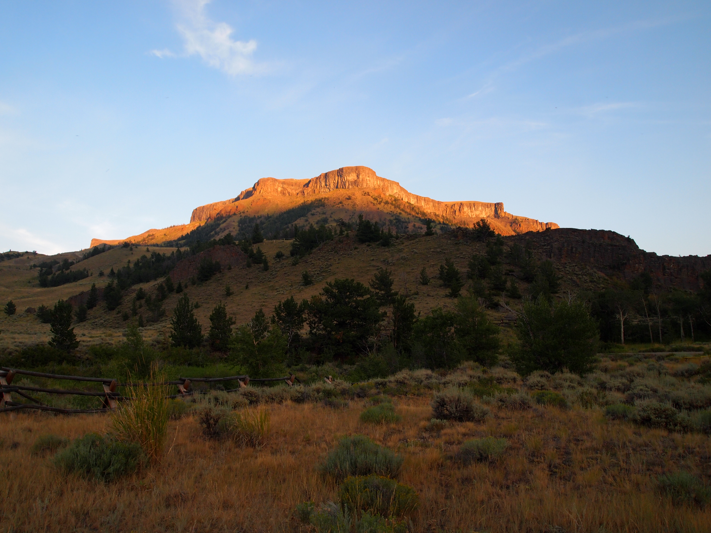 Sunset over Jack Creek Campground.
The road from Meeteetse to Jack Creek Campground, on the Greybull, is long and rough, but as per usual, there was not a single other campsite taken. This is incredible to me given how close it is to the hordes nearby in Yellowstone. The scenery is incredible, the river looks like a classic, western blue-ribbon trout stream, and the grizzly bears are, apparently, plentiful. Jack Creek campground is a place I wanted to stay for a week, and fortunately, the fishing lived up to its promise.
This was by far, the most enjoyable experience of the whole trip. The evening we arrived, I fished the river almost behind my campsite and immediately caught a few nice cutthroat. There were fish rising everywhere, and it’s clear the river doesn’t see a lot of pressure. The next morning I fished again, and again caught quite a few fish. The Greybull is extremely slick to wade, and I kept an eye out for grizzlies, but the fishing was amazing. My catch rate was high, the average fish size was probably about 12 inches, with a few pushing 15. These fishing experiences are so enjoyable, but they make for a short story: arrived, got a nice campsite, and caught a lot of fish in beautiful scenery.
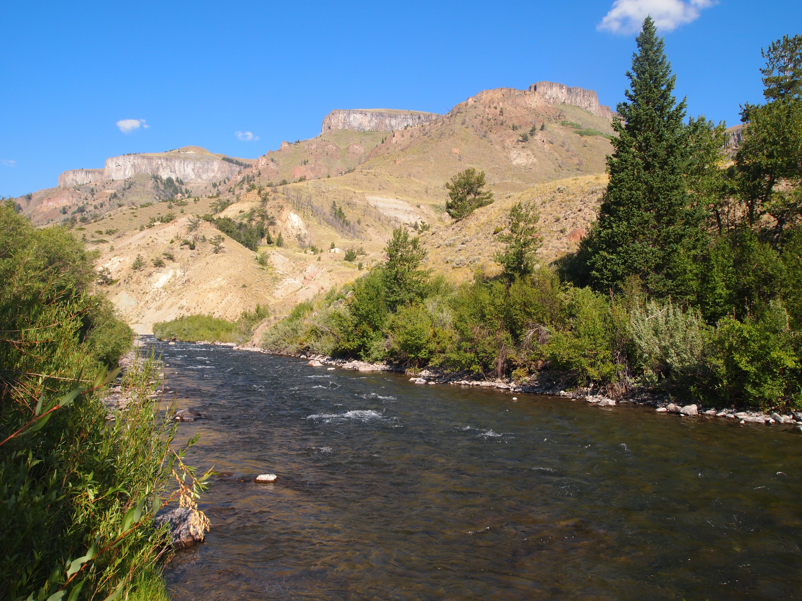 Greybull River in the morning.
Colorado River Cutthroat–Attempt Number 2, North Cottonwood Creek
I went back to the eastern slope of the Wyoming Range in mid-September, after my summer trip. And, just like my summer trip, I made the mistake of not going to LaBarge Creek. The reason for this is that we wanted to do a backpacking trip, and there is no backpacking along LaBarge Creek, only driving. Instead, I decided we would hike up North Piney Creek, and I assumed, like the Utah rivers I’m familiar with, that increasing elevation would increase the cutthroat to non-cutthroat ratio.
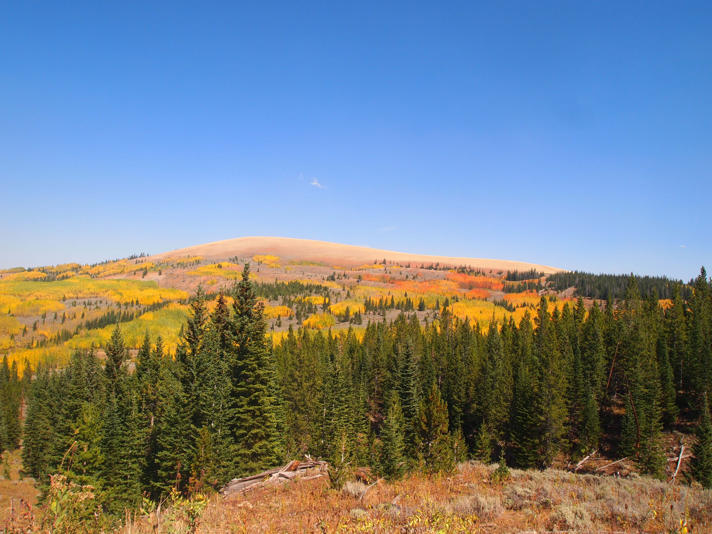 The east slope of the Wyoming Range in fall.
We only had a weekend, and work delays meant we left too late on Friday. We arrived at the North Piney Creek trailhead too late in the day to get very far up the river, though I met a guy coming down the trail who had fished. He assured me he caught some cutthroats, though also gave me an ominious warning about the start of hunting season. It turned out that after hiking up the trail about two miles, we hiked directly into hunters who parked at a higher trailhead reachable on a quad or side-by-side. In other words, by going up the drainage away from the main road, we actually hiked into the crowds. We inadvertently setup camp nearly in the dark very close to a staging area. This meant we woke up at about five a.m. to the sound of quads and hunters talking. Not a great camping experience!
I managed to fish for a few minutes before it got too dark and caught lots of fish. Unfortunately, they were all five inch brook trout. It’s my understanding that back East a lot of people pursue brookies and view them with reverance, but I absolutely laothe them. They don’t belong in the West, they never get that big, and they are an incredible nuisance when trying to catch native fish.
The next morning we hiked farther up North Piney Creek, but the water got very small very quickly, and I didn’t have much fishing success. The number of hunters and off-road vehicles was a legitimate issue too as it was a total zoo in the area. I also hunt and have no moral objection to it, though I get annoyed with the use of gas-powered vehicles to cover ground in the backcountry. We decided to hike out and try our luck elsewhere. Hilariously, almost at the trailhead where we parked, and below where all the hunters drove onto the trail, there was a bull elk bugling like crazy from some pine trees.
We drove from North Piney to North Cottonwood. As in the summer, my plan was to use the road along North Cottonwood to connect over to Greys River Road, then out to Alpine, and back to Cache Valley. I was also hoping that because the creek was right along a road there would be fewer hunters. That was a poor assumption. Nearly every plausible dispersed campsite was taken and we were forced to camp in what was essentially a turnout along the road. The good news is that I had all day to catch at least one cutthroat from North Cottonwood Creek, which the Wyoming Game and Fish says is “one of the state’s finest fly-fishing streams,” and one in which Colorado River cutthroat are “common.”
It is definitely full of brook trout. For hours I caught dozens of them. As usual, the average size was about eight inches and it’s just not very satisfying fishing. It was getting dark and I was getting frustrated. I began to suspect that the cutthroat were deeper in the water column but I really wanted to use a dry fly to catch one. But, every cast on top of the water just brought up brooks. This is an experience I’ve had in a number of places with small but aggressive fish attacking the surface, but larger fish remaining deeper. Eventually, I think I just got lucky. I cast to an undercut bank and my dry fly got sucked under the surface, maybe only a foot, if that. I hooked a fish and it immediately looked different. I had caught my Colorado River cutt.
Were I to do this experience today, I would pretty quickly switch to a dry-dropper, or even just a pure nymph setup. At the time, I didn’t really use nymphs or dropper setups effectively, and was really stuck on trying to fish exclusively with drys. I’ve also gotten better at using a dry similar to a wet fly by allowing it to sink. This is most effective on very small creeks by allowing the dry to float through the whitewater and go under into a hole. I’ve even begun tying my version of a wet fly doing something like an Adams, but without any hackle to allow it to better sink. When fishing with it, I don’t add any floatant and after it soaks, the fly will start to sink a little, especially when it encounters whitewater or riffles. This can be very effective at getting the fly just deep enough to entice a trout sitting at the bottom of a hole on a small creek. The trout still needs to move up, so it isn’t the same as nymphing where one attempts to get the fly all the way down to the fish, but I think it simulates a floating bug that may have just gotten sucked underneath the current a bit. North Cottonwood may be slightly too big of water to do this a lot, but I could imagine allowing a fly to sink just six inches or so under an undercut bank. In fact, this is almost exactly how I caught my cutt, though it wasn’t purposeful when I did it then. Does this count as dry fly fishing? Not really, but I can say I caught all my Wyoming fish, as with all my Utah fish, on dry flies, even if they were not always floating.
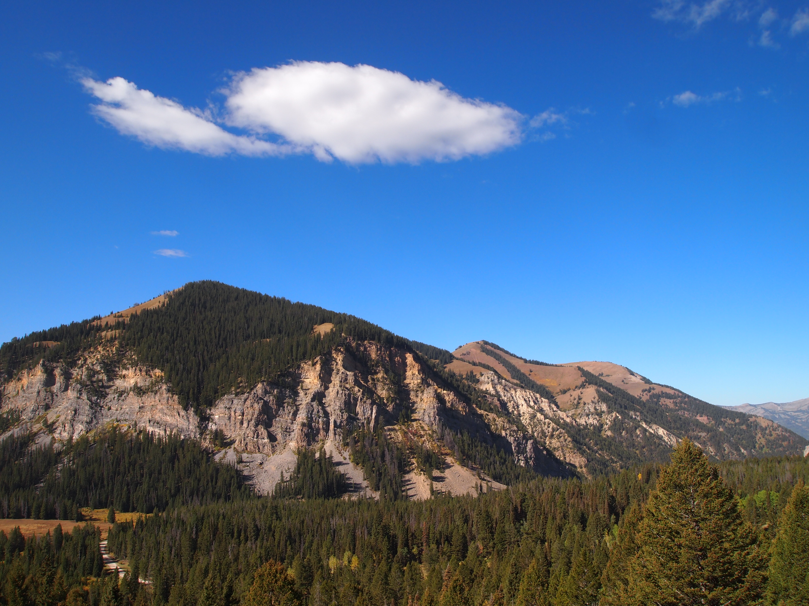 Over McDougal Gap in September. Compare this picture without smoke to the one above.
Summary
Perhaps part of the reason why the Greybull was so enjoyable is that once I caught my fish the evening we arrived, the pressure was off. It was the last stop before I went home, and I had caught three of the four. Again, the lesson (for me, anyway) seems to be not to rush things. I wish I could have stayed longer at each spot and really learned the river or creek. As I mentioned, I’ve fished Hobble Creek a few times now, and I’ve had some amazing experiences on that water because I’ve been able to explore it more and understand the fish in the creek better. When fishing for an evening or morning on the way to the next spot, one doesn’t get to unlock the fishing on a particular water at all.
On the other hand, most of us have jobs, families, regular lives to live, and we can’t spend three or four days in one spot if we’re trying to finish the slam. Perhaps two full nights at each spot is optimal, but that means eight nights, not including driving days. And, if catching a particular species isn’t successful, then one has to decide pretty quickly whether they are going to move on, or burn all their time working on one fish.
The Wyoming slam was the first slam and remains the most famous for a reason. The driving was a hassle, especially through Yellowstone at the height of summer. I had done it a few years before and promised myself never again, then I did it again. This time, I really won’t do it again. But, Western Wyoming is an amazing place and there is so much to do and see besides Teton and Yellowstone. My trip didn’t even touch the Bighorns or Wind River range. I would love to go back to the Meeteetse area and fish the Greybull again, but also the Wood and the smaller creeks in that area. It’s rumored that Fenn’s Treasure was hidden in the Wood River drainage, though recent reports suggest it was in Yellowstone National Park which is to the west of the Shoshone National Forest, where most of the Greybull and Wood River drainages are located.
Perhaps because I live in Utah, the Wyoming slam felt bigger, more interesting, and more classically “western.” There weren’t any tiny, brushy creeks on this trip, and though I didn’t go to any of the really famous Wyoming waters, the fishing was mostly very good. These are big, but not too big rivers, pressure is light, campgrounds are quiet, and the scenery is excellent.
In some ways the Wyoming Cutt Slam is easier than the Utah one because the fishing is probably a little more straightforward, with the exception of the Colorado River Cutt. I think LaBarge Creek is the obvious place to go now, though I’ve read reports online that it can sometimes be difficult fishing. I fished it in the Tri-Basin Divide once, after I’d completed my slam, and I caught some small cutts without too much difficulty.
The Bonneville could also be a little tricky if the Smiths Fork or Hobble Creek don’t work, and in both of those you’ll have to fight through the browns, and possibly rainbows or brooks. I know nothing about the other creeks listed on the Fish and Game’s website, but when researching this trip, they didn’t seem like good options for one reason or another.
The logistics in Wyoming are more difficult than Utah however, and if for some reason you struck out on a particular river and had to come back, it’s likely going to be a lot of travel time. I also got relatively lucky with the weather, with the only real challenge coming on the Greys where it was very hot. The air quality in the Wyoming Range was not great due to smoke, but fly fishing is not aerobic so it wasn’t a big deal other than obscuring some of the scenery. Summers in the West are increasingly unpredictable and very hot weather, fires, smoke, or heavy rain can derail plans. For these reasons, I think Utah is still probably the easier first cutt slam to attempt, but it’s close between the two.